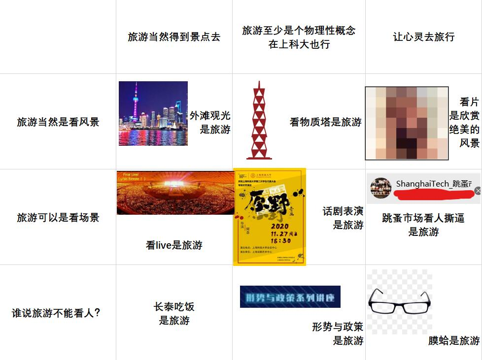
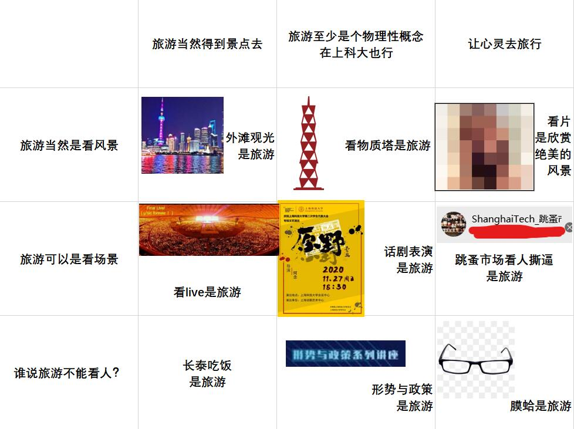

201130
2020-11-30
今天整的活

今天整的活

还没懂，先坑着
运行程序
路径不包含当前目录
需要./，或绝对路径
控制符
实为进程间通信
tty下是tty和目标进程间
DE下则是terminal(GUI)和DE，DE和目标程序间
终端中交互程序实际为输入发送至程序的stdin，stdout输出指向终端
回想：cpp文件输入freopen即是把程序stdin/stdout重定向
环境变量
密码非常的骚
我一边配一边笑抽
结果改密码遇上非常奇葩的事情（一切都是因为用了无线连接+图形管理界面的锅
- 改好密码，配置应用。自然，电脑是会断网的。忘记网络，输新密码，重连，看起来不错。
- 但！是！这时候浏览器不安分了！网页前端脚本（应该是）在90s检测不到路由器在线后，执行回滚更改命令。恰巧这个时候我输入新的密码连上路由器了，于是……
- 密码被回滚了
- CNMSB
- 后来直接关网页+清cookie解决
iwctlknown-networks SSID forgetstation device connect SSID前情提要：50从楼上大佬那收的Netgear R6220。128M内闪存+128M存储（极小），但四口全千兆，2.4/5双频，还有学长售后服务，还要什么自行车
首先，之前已经配置好openssh啦~
在ssh的时候一定要带用户名！！！ssh root@192.168.1.1
然后进入openwrt的后台。
查资料
百毒敬烟难得靠谱了一次，照着它淦~
收到的时候原物主已经把路由恢复默认了，看一下有什么包
噫好耶有一堆usb依赖已经装好了lsblk看一下，发现usb已经挂载了
那就好办了，直接进行以下操作
opkg install samba luci-app-samba kmod-fs-ntfs ntfs-3g block-mount
百毒的是写脚本
这博客貌似更靠谱？/etc/init.d/samba enable/etc/init.d/samba start
因为装的是Openwrt-Luci，一切就是如此简单
GUI，轻轻松松~
777权限，色图随便传（
在所有程序作业使用pdf提交的情况下……
迎来了Signal Processing hw3……
——非常漂亮的被misgrade了……
原因就是——
matlab的GUI下拉框对应的cell类型数组不会显示在导出的pdf里
导致作业没法批改
关键TA用词就NM离谱
老兄你这滤波器根本没实现啊
好吧另两种确实没实现，但这用语……
1 | Re : SP_HW3 for SI100B Argument |